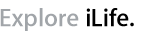

iTunes Music Store
Store · Browse · Library · Rights / FairPlay
April 28, 2003 — buy songs for just 99 cents, without subscription fees. Over 200,000 songs at launch (BMG, EMI, Sony, Universal, Warner). AAC 128 kbps · FairPlay DRM era. Free 30-second previews (theater note only — no real audio).
Platform honesty: Mac + U.S. billing first · iTunes 4 · Mac OS X 10.1.5+. Windows path arrives October 16, 2003 (same store, same 99¢). This is own-download (with DRM) — not unlimited streaming.
Rock Hip-Hop Pop Jazz Soundtrack Classical
Your library (local)
By Dec 15 2003 Apple announced 25 million songs sold; catalog 400,000+. Gifts & Allowance since Oct 16. No real audio files or payments in this museum.